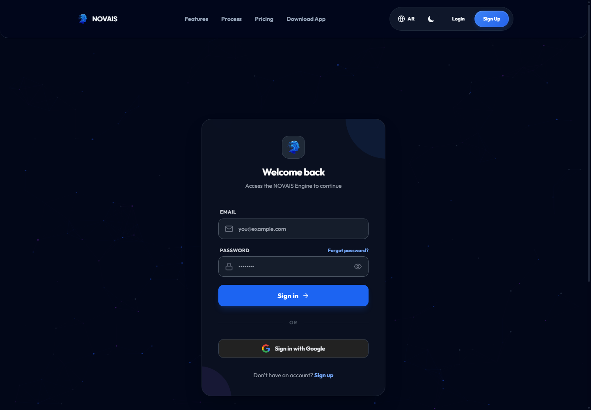
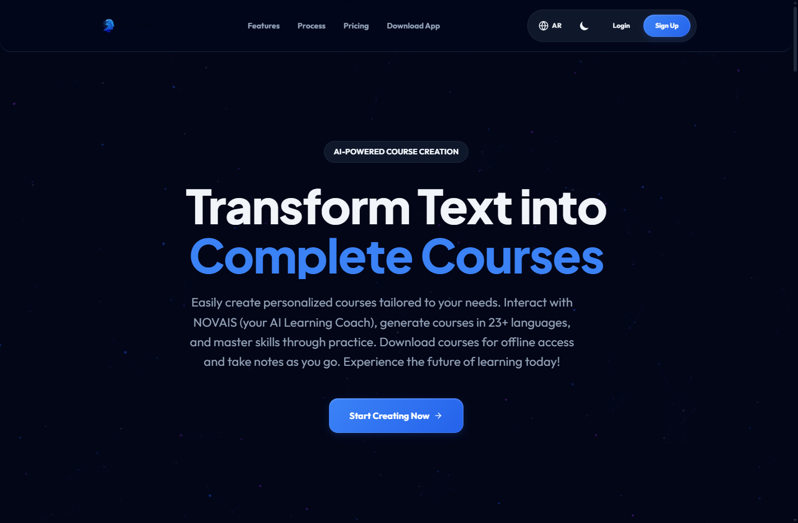

NOVAIS Graduation Defense Guide
Shahd Shehab - UI, Testing, Electron
دليل دفاع يركز على جودة الواجهة، responsive behavior، evidence of testing، ونسخة الديسكتوب المبنية بـ Electron.
1. دورك في المشروع
دورك إنك تضمن إن NOVAIS مش API شغال وخلاص، لكن تجربة مستخدم مفهومة على الويب والديسكتوب: layout، responsiveness، loading/error states، توحيد الشكل، وتجهيز أدلة الاختبار والبناء.
2. هدف الواجهة
واجهة NOVAIS لازم تخدم نوعين مستخدمين: طالب/مستخدم بيولد محتوى ويتعلم، وأدمن بيدير المنصة. التصميم محتاج يكون واضح، responsive، ويدعم flow طويل من login لحد generation والحفظ والتصدير.
3. UI Architecture
Layouts
Public layout، user dashboard layout، admin layout، standalone course routes.
Reusable Components
Sidebar, ExportModal, dropdowns, ChatBot, NotesSidebar, cards/forms.
Pages
Create, Generating, Topics, Course, Payment, Profile, Admin screens.
Desktop Wrapper
Electron يشغل نفس React build مع preload API محدود.
4. الأدوات والتقنيات
| أداة | دورها |
|---|---|
| React/CSS | بناء صفحات وتفاعل SPA. |
| Material UI | بعض components وخاصة admin/forms. |
| Electron | تحويل web app لتطبيق Windows desktop. |
| electron-builder | بناء installer/desktop package. |
| Readiness docs | توثيق أوامر الاختبار والبناء والنتائج. |
5. Responsive Design
الواجهة فيها صفحات كثيرة: landing, dashboard, course viewer, admin tables. المهم في الدفاع تقول إن responsive مش شكل بس؛ هو إن flow المستخدم يفضل قابل للاستخدام على شاشات مختلفة، وإن النصوص والأزرار والcards ما تكسرش layout.
- Dashboard/sidebar للويب.
- صفحات forms قابلة للتمرير.
- Course viewer يعرض modules/lessons وcontent.
- Admin screens تعتمد على tables/forms واضحة.
6. Electron Desktop
نسخة الديسكتوب موجودة في public/electron.js و public/preload.js. في development تحمل localhost، وفي production تحمل React build من الملف. package script يبني React ثم electron-builder.
7. Desktop Security
- nodeIntegration:false يمنع React من الوصول المباشر لـ Node APIs.
- contextIsolation:true يعزل preload عن صفحة الويب.
- preload محدود expose API صغير لـ Google login فقط.
- external links http/https links تفتح في browser النظام بدل windows عشوائية.
- devTools متاحة في dev فقط.
8. Testing Strategy
الاختبار في NOVAIS مش نوع واحد. في backend tests للbusiness logic، React build للواجهة، Flutter analyze/test للموبايل، Electron build للديسكتوب، وmanual smoke checks موثقة. دورك تربطي جودة UI بالدليل مش بالكلام العام.
| اختبار | يثبت إيه |
|---|---|
| php artisan test | منطق الباك: auth, payments, blueprints, notifications. |
| CI=true npm run build | React يترجم production بدون أخطاء build. |
| flutter analyze/test/build | الموبايل static analysis/tests/APK. |
| npm run electron:build | desktop package يطلع من React build. |
9. Evidence موجود في الريبو
docs/final-readiness-check.md و docs/verification-notifications.md فيهم نتائج تحقق مسجلة: backend tests، web build، Flutter checks، Electron build، وWindows launch smoke check. استخدميهم كدليل، لكن ما تزوديش ادعاءات خارج المكتوب.
10. Bug Handling
أمثلة مهمة: زرار go_back كان ظاهر كمفتاح ترجمة بدل نص مفهوم، وده نوع bug UI/localization لازم يتصلح لأنه يبان للمستخدم. كمان أي تغير في terminology لازم يتراجع في الشاشات كلها عشان المنتج ما يبقاش بيقول course لما هو book أو graduation project.
11. Usability
- Loading states في generation.
- Error handling يرجع المستخدم بمعلوماته.
- Admin navigation واضح.
- Dark mode وlanguage headers.
- Desktop Google login عبر modal آمن نسبيا.
12. Admin UX
لو اتسألتي عن الأدمن: الواجهة فيها screens لإدارة platform settings, content blueprints, plans, offline payments, notifications, CMS. مهم توضحي إن admin UX أصعب لأنه forms طويلة وبيانات حساسة، فلازم feedback/validation يكون واضح.
13. حدود صريحة
14. ملفات لازم تبقي حافظاها
src/App.js، src/pages/course.js، src/pages/create.js، src/pages/admin/AdminLayout.js، src/components/ExportModal.js، public/electron.js، public/preload.js، package.json، electron-before-build.js، docs/final-readiness-check.md.
15. What To Say In Defense
Doctor May Ask
يحول AI backend لتجربة مفهومة: form، loading، review، save، view.
من CI=true npm run build الموثق في readiness docs.
Framework يشغل web app داخل desktop shell.
عشان نستخدم نفس React app ونقلل التكرار والصيانة.
public/electron.js.
public/preload.js وبي expose API محدود.
عشان صفحة React مايبقاش عندها وصول مباشر لـ Node.
لعزل سياق preload عن سياق الصفحة وتحسين الأمان.
Electron يفتح modal OAuth ويراقب redirect فيه token ثم يبعت event للواجهة.
في browser النظام باستخدام shell، بدل نوافذ داخل التطبيق.
create -> generating -> topics -> course viewer.
تعرضي حالة انتظار واضحة، خصوصا لأن AI generation ممكن يطول.
المستخدم يرجع للform والداتا ما تضيعش.
مراجعة الشاشات على أحجام مختلفة والتأكد إن النصوص/الأزرار لا تتداخل.
الدليل الحالي يوثق builds/smoke، لكن آخر update لا يدعي screenshot matrix كاملة.
توثيق commands والنتائج عشان الدفاع يبقى بدليل.
login كadmin، فتح pages، تجربة forms/tables، والتأكد من API responses.
AdminLayout والbackend admin middleware يمنعوا الوصول.
لما يظهر key زي go_back بدل النص الحقيقي، وده لازم يتراجع في locales.
لا. UI يساعد، لكن backend هو مصدر الصلاحيات الحقيقي.
هو يعتمد على نفس API والإنترنت؛ مش تطبيق offline كامل.
npm run electron:build.
تجهيز package/installer لWindows.
لأن المستخدم ينتقل بين صفحات كثيرة ولو labels مختلفة هيتوه.
تحويل النظام لتجربة قابلة للاستخدام والاختبار على web وdesktop.
نقول بصراحة فيه PR draft لتحسين terminology ولسه محتاج مراجعة شاملة قبل release.
تفاصيل مملة مهمة للـ UI وElectron
طريقة الشغل: Waterfall ولا DevOps؟
في UI/testing نقول: "اشتغلنا incremental verification". كل feature ليها build/test/smoke. مش Waterfall لأن UI اتغير مع features زي blueprints وoffline payments. ومش DevOps كامل لأن مفيش pipeline deployment ثابت، لكن فيه DevOps mindset في توثيق أوامر build والاختبارات.
Responsive Mockup صورة توضيحية
صور UI حقيقية بدل الموكابس


Electron Runtime Diagram
Electron Security Checklist
| إعداد | موجود فين؟ | ليه مهم؟ |
|---|---|---|
| nodeIntegration:false | public/electron.js | يمنع صفحة React من استخدام fs/process مباشرة. |
| contextIsolation:true | public/electron.js | يعزل عالم preload عن عالم الصفحة. |
| preload.js | public/preload.js | يفتح دوال محدودة فقط زي Google login. |
| منع new windows | window open handler | يقلل فتح صفحات غير متوقعة داخل التطبيق. |
| External browser | shell.openExternal | روابط http/https تفتح في browser النظام. |
| DevTools dev فقط | isDev flag | يقلل سطح الفحص في production. |
Testing Matrix
| الطبقة | الأمر/الدليل | بيغطي إيه؟ | لا يغطي إيه؟ |
|---|---|---|---|
| Backend | php artisan test | business logic، auth، payments، blueprints. | شكل UI أو تجربة المستخدم. |
| Web | CI=true npm run build | compilation وproduction bundle. | مش proof إن كل click اتجرب. |
| Mobile | flutter analyze/test/build | static analysis، tests، APK build. | مش proof لكل جهاز حقيقي. |
| Desktop | npm run electron:build | بناء تطبيق Windows. | مش اختبار كل flow بعد التثبيت. |
| Manual Smoke | docs/final-readiness-check.md | تشغيل سريع موثق. | لا يغني عن QA matrix كاملة. |
Full UI/Testing/Electron Flow
- UI تبدأ من visual identity: logo، navy background، blue CTA، typography كبيرة في hero، cards للpricing.
- Responsive verification: desktop landing، mobile landing، pricing، signin، create route.
- لو compile error ظهر، ده blocker UI حقيقي؛ أثناء الالتقاط ظهر error في course.js واتعمل fix محدود لإغلاق JSX زائد.
- Electron flow: main process يفتح BrowserWindow، preload يعرض bridge محدود، renderer يشغل React.
- Desktop screenshot اتاخد من Electron capturePage، مش مجرد Chrome.
- Testing evidence يتقسم: build != full QA. build يثبت إن الكود يترجم، manual screenshots تثبت إن UI بيظهر، tests تثبت business logic.
UI Inventory: إيه العناصر الموجودة؟
| العنصر | أمثلة ملفات | وظيفته في التجربة |
|---|---|---|
| Navigation | UserLayout, AdminLayout, Sidebar | ينقل المستخدم بين dashboard/create/profile/admin. |
| Forms | create.js, platformsettings.js, contentblueprints.js | إدخال بيانات مع validation ورسائل. |
| Cards | create/product cards, pricing cards | تقسيم الاختيارات بشكل واضح. |
| Tables | users, courses, offline payments | إدارة بيانات كثيرة للأدمن. |
| Modals | ExportModal.js | اختيار export بدون مغادرة viewer. |
| Loading/Error | generating.js | feedback في العمليات الطويلة. |
Sequence: Google Login على Desktop
- React يستدعي window.novaisElectron.startGoogleLogin(url).
- preload يتأكد إن الرابط http/https ثم يرسل IPC للmain process.
- Electron يفتح modal BrowserWindow للـ OAuth.
- main process يراقب redirect URL وفيه token=.
- يبعت google-login-success للrenderer.
- React يخزن token ويتعامل مع المستخدم زي الويب.
DB من زاوية UI
الـ UI ما بتتعاملش مع الداتابيز مباشرة، لكن لازم تعرفي mapping: شاشة المستخدم تقرأ courses وlessons، شاشة الأدمن للمدفوعات تقرأ payments وoffline_payment_requests، شاشة notifications تقرأ app_notifications، وشاشة content blueprints تقرأ content_blueprints. ده مهم لو الدكتور سأل: "الشاشة دي بياناتها منين؟"
Common Mistakes
- ما تقوليش "اختبرنا كل شاشة بسكرينشوت" لو الدليل مش موجود.
- ما تنسيش تذكري Electron security flags.
- ما تعتبريش build مساوي لاختبار كل business flow.
- ما تقولي إن native push جاهز بالكامل بدون Firebase.